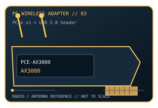

[ MODEL-SPECIFIC PC WI-FI HARDWARE ]
ASUS PCE-AX3000 Wi-Fi 6 PCIe Adapter
Dual-band Wi-Fi 6 PCIe x1 adapter with two antennas and a separate Bluetooth USB connection. This record documents the named model and its labeled revision scope; it is not a claim that similarly named variants share identical drivers or radio limits.

IDENTIFICATION: Match the full product name, model label and hardware revision with its manufacturer page before choosing a driver. Regional channel and OS support can vary.
Dedicated wireless specifications
| Cataloged product | ASUS PCE-AX3000 Wi-Fi 6 PCIe Adapter |
|---|---|
| Wi-Fi generation / standards | Wi-Fi 6 (802.11ax), backward-compatible with IEEE 802.11a/b/g/n/ac. |
| Radio bands, channels & width | 2.4 GHz and 5 GHz; 20/40 MHz at 2.4 GHz and up to 160 MHz at 5 GHz. U.S. channel examples: 1–11 (2.4 GHz), 36–165 (5 GHz); regulatory domain and DFS determine actual availability. |
| Spatial streams / nominal link rates | 2×2 MIMO, up to 574 Mb/s at 2.4 GHz plus 2,402 Mb/s at 5 GHz using a compatible 160 MHz Wi-Fi 6 AP (nominal AX3000 PHY class). |
| Host interface | PCI Express x1 only, per ASUS. Bluetooth 5.0 uses the card’s USB cable connected to a motherboard USB 2.0 header. |
| Antenna arrangement | Two external dual-band antennas connect to the included antenna base. |
| Operating-system compatibility | ASUS support lists Windows 10/11 x64 Wi-Fi and Bluetooth drivers, plus a Linux driver entry for kernel 5.1/5.2. Confirm current OS and chipset support in the linked download page. |
| Bluetooth | Bluetooth 5.0 is a separate USB-header function; Wi-Fi uses the PCIe x1 connection. |
| Regulatory channel note | No 6 GHz radio. Channel selection is regional; some 5 GHz channels require DFS and are controlled by host regulatory settings. |
Model-specific installation notes
The x1 lane requirement and internal Bluetooth USB lead are separate fit checks. 160 MHz operation needs a peer AP and a channel/regulatory domain that permit it.
2 external antennas are shown in this model’s source documentation. Install only with the correct host connector and driver package; antenna placement, local regulation and access-point capabilities affect operation.
Manufacturer sources
- ASUS PCE-AX3000 product specificationsOfficial manufacturer source for product specifications, revision-specific software, or compatibility requirements.
- ASUS PCE-AX3000 drivers and support OS listOfficial manufacturer source for product specifications, revision-specific software, or compatibility requirements.
Source pages may describe a hardware family or provide revision-selected downloads. Manufacturer regional restrictions and current OS support take precedence over generic interface fit.